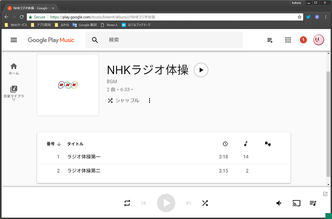
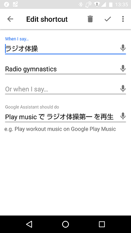

Google Home miniでいつでもラジオ体操ができるライフハック
2018-04-08 11:02:42 +0900 JST
Categories: Gadget
「OK Google, ラジオ体操」
我が家ではこれでラジオ体操第一が流れるようになっています。
IFTTT等の連携機能を使わずHomeの機能だけでラジオ体操を流せるようにする方法を紹介します。
使うのはGoogle Play Musicです。
Apple MusicやAmazon Musicと同じくサブスクリプション型サービスですが、Google Play Musicは無料版が存在します。
無料版では聞き放題がない代わりに、手持ちの音楽をアップロードしてWebから聞けるような機能があります。
このGoogle Play MusicはGoogle Homeと連携可能になっており、「OK Google, Play Musicで○○を再生して」という風に曲名を指定したりプレイリストを再生することができます。
ここにラジオ体操の音源を放り込むと・・・あとはわかりますね？
作り方
- CDやYouTube等からラジオ体操の音源を用意してください。(MP3とかになっていればOKです)
- MP3をGoogle Play Musicにアップロードします。
- アップロードした曲に曲名をつけてください。この曲名を使って流せるようにします。
 - この状態でGoogle Homeに 「OK Google, Play Musicで ラジオ体操第一 を再生して」 と喋ってラジオ体操が流れることを確認します。
- スマホのGoogle Homeアプリで、ショートカットを登録します。
Devices -> Google Home Settings -> More -> Shourtcutと進みます。 - 右下の追加ボタンを押して、スクショのように登録します。反応させたい言葉を複数登録すれば、その分ヒットしやすくなります。

では今日も一日元気よく、大きな声で 「OK Google, ラジオ体操!」